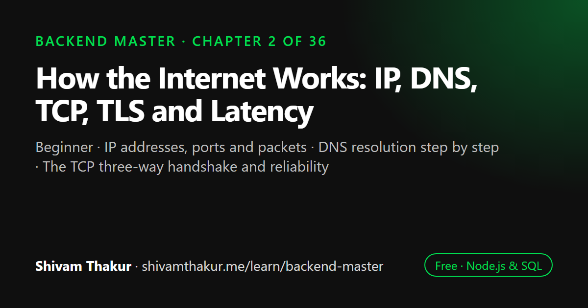

Chapter 2 of 36 · Beginner
How the Internet Works: IP, DNS, TCP, TLS and Latency
How the Internet Works — IP, DNS, TCP, TLS and the Numbers That Rule Everything

Every request your backend serves travels over IP, is routed using DNS, carried by TCP and protected by TLS. This chapter explains each layer with measured examples, the latency numbers that govern performance, and what really happens between typing a URL and seeing a page.
In this chapter you will learn
- IP addresses, ports and packets
- DNS resolution step by step
- The TCP three-way handshake and reliability
- TLS encryption and certificates
- Latency, bandwidth and why round trips matter
2.0 Why This Chapter Matters
In Chapter 1 we built a server and said "the request gets there somehow." This chapter removes the "somehow."
Why should a backend engineer care about cables and handshakes? Because every slow API, every mysterious timeout, every "works on my machine but not in production" bug eventually traces back to the network.
- Your API is fast on your laptop (0 ms network) and slow for users in another country (150 ms network, per round trip).
- Your app can't reach the database: is it DNS? A firewall? A closed port? The wrong IP?
- Your HTTPS site shows a scary certificate warning. Why?
- Your server runs out of connections under load. What is a connection, anyway?
After this chapter, you will be able to look at any of these and know which layer to blame.
2.1 The Big Picture: What Happens When You Visit a Website
You type https://shopline.com/products and press Enter. In roughly 200 ms, all of this happens:
YOUR BROWSER SERVER
───────────── ──────
1. DNS: "what IP is shopline.com?" ──▶ DNS servers ──▶ 203.0.113.10
2. TCP: connect to 203.0.113.10:443 ─── SYN ────────────────────▶
◀── SYN-ACK ────────────────
─── ACK ────────────────────▶
3. TLS: agree on encryption, verify certificate ◀──────────────▶
4. HTTP: GET /products ─────────────────────────────────────────▶
◀────────── 200 OK + HTML/JSON
5. Browser renders / app uses the dataFive stages. We'll take them one by one:
- IP addresses & ports: how machines and programs are identified.
- DNS: turning names into addresses.
- TCP: reliable delivery of bytes.
- TLS: making those bytes private and verified.
- HTTP: the language spoken on top (Chapter 3).
Real-Life Analogy: Sending a Letter by Post
| Post | Internet |
|---|---|
| Looking up a friend's address in a phone book | DNS |
| The address (street, number) | IP address |
| The apartment number | Port |
| Calling first: "Are you home? Yes. OK, I'm sending." | TCP handshake |
| Putting the letter in a sealed, tamper-evident envelope signed by a notary | TLS |
| The language you write the letter in | HTTP |
| The postal service breaking big parcels into small boxes and re-assembling them | Packets |
2.2 Layers: Why the Internet Is a Stack
Networking is organized into layers. Each layer solves one problem and relies on the layer below. You don't need all of the formal models, only this practical version (the "TCP/IP model"):
┌─────────────────────────────────────────────────────────────┐
│ APPLICATION HTTP, DNS, SMTP, WebSocket, gRPC ← YOU live │
├─────────────────────────────────────────────────────────────┤
│ (SECURITY) TLS (sits between application and transport) │
├─────────────────────────────────────────────────────────────┤
│ TRANSPORT TCP, UDP (ports, reliability) │
├─────────────────────────────────────────────────────────────┤
│ INTERNET IP (addresses, routing) │
├─────────────────────────────────────────────────────────────┤
│ LINK Ethernet, Wi-Fi (one hop to the next device) │
└─────────────────────────────────────────────────────────────┘Encapsulation is the key idea. When your app sends GET /products, each layer wraps the data in its own "envelope" with its own header:
HTTP message: [ GET /products ... ]
+ TLS: [ encrypted( HTTP message ) ]
+ TCP header: [ src port | dst port | seq # | ... | encrypted data ]
+ IP header: [ src IP | dst IP | ... | TCP segment ]
+ Link header: [ MAC addresses | ... | IP packet ]Each layer only reads its own envelope. A router only looks at the IP header; it doesn't know or care that you're loading a shopping page.
2.3 IP Addresses
An IP address identifies a device (more precisely, a network interface) on a network.
IPv4
Four numbers from 0–255, separated by dots: 203.0.113.10. That's 32 bits, giving about 4.3 billion addresses. Sounds like a lot, but we ran out years ago, because there are more devices than that.
IPv6
Eight groups of hex: 2001:0db8:85a3:0000:0000:8a2e:0370:7334 (leading zeros and runs of zero groups can be shortened: 2001:db8:85a3::8a2e:370:7334). 128 bits, about 3.4×10³⁸ addresses, enough to give every grain of sand a few trillion.
Public vs private addresses
Your home Wi-Fi gives your laptop an address like 192.168.1.23. That's a private address; it only means something inside your home. The whole house shares one public address on the internet.
Private ranges (memorize these; you'll see them in cloud networking constantly):
| Range | Common use |
|---|---|
10.0.0.0/8 |
Companies, cloud VPCs |
172.16.0.0/12 |
Docker uses 172.17.x.x by default |
192.168.0.0/16 |
Home routers |
NAT (Network Address Translation) is how the router lets many private devices share one public address: it rewrites addresses on the way out and remembers which reply belongs to whom, like a receptionist forwarding calls.
Special addresses
| Address | Meaning |
|---|---|
127.0.0.1 / localhost |
"This computer" (loopback). Traffic never leaves the machine. IPv6: ::1 |
0.0.0.0 |
"All network interfaces". A server binding to it accepts connections from anywhere |
255.255.255.255 |
Broadcast |
CIDR notation (you will see this in firewalls and cloud config)
10.0.0.0/24 means "the first 24 bits are fixed; the last 8 bits vary." That's 2⁸ = 256 addresses (10.0.0.0–10.0.0.255). /16 is 65,536 addresses. Smaller number after the slash = bigger network.
2.4 Ports
An IP address finds the machine; a port (0–65535) finds the program on it.
| Port | Service |
|---|---|
| 22 | SSH (remote login) |
| 25 / 587 | Email sending (SMTP) |
| 53 | DNS |
| 80 | HTTP |
| 443 | HTTPS |
| 3000, 8080 | Common dev ports for web apps |
| 3306 | MySQL |
| 5432 | PostgreSQL |
| 6379 | Redis |
| 27017 | MongoDB |
- Ports 0–1023 are "well-known" and, on Linux, need elevated privileges to bind. That's why dev servers use 3000 or 8080, and production puts a reverse proxy (NGINX) on 80/443 in front.
- A socket is the pair (IP address, port). A TCP connection is uniquely identified by four values:
(client IP, client port, server IP, server port). This is why one server port (443) can handle thousands of simultaneous clients: each client has a different IP/port.
2.5 DNS: The Internet's Phone Book
Humans remember shopline.com. Computers route to 203.0.113.10. DNS (Domain Name System) translates one into the other.
2.5.1 Anatomy of a domain name
www . shopline . com .
│ │ │ └─ root (usually invisible)
│ │ └───── TLD: top-level domain (.com, .org, .in)
│ └────────────── second-level domain (what you buy)
└────────────────────── subdomain (you create as many as you like)Read right to left: root → .com → shopline → www. DNS is a hierarchy, a tree. (Yes, a tree from our DSA book!)
2.5.2 The resolution journey
When your browser needs api.shopline.com:
Browser cache? ──no──▶ OS cache? ──no──▶ Router cache? ──no──▶
│
┌───────────────▼──────────────┐
│ RECURSIVE RESOLVER │
│ (your ISP, 8.8.8.8, 1.1.1.1) │
└───────────────┬──────────────┘
cached? return immediately. │ not cached:
▼
1. ask ROOT server: "who handles .com?" → "ask the .com servers"
2. ask .COM TLD server: "who handles shopline.com?" → "ask ns1.shopline.com"
3. ask AUTHORITATIVE NS: "IP of api.shopline.com?" → "203.0.113.10, TTL 300"
│
resolver caches the answer for 300 seconds
and returns it to your browserTakeaways:
- Most lookups are answered from caches and cost almost nothing.
- A cold lookup might take 20–120 ms.
- Each answer carries a TTL (Time To Live): how many seconds it may be cached.
2.5.3 DNS record types (you will edit these)
| Type | Purpose | Example |
|---|---|---|
| A | Name → IPv4 | api.shopline.com → 203.0.113.10 |
| AAAA | Name → IPv6 | api.shopline.com → 2001:db8::10 |
| CNAME | Alias to another name | www.shopline.com → shopline.com |
| MX | Mail servers for the domain | shopline.com → mail.google.com |
| TXT | Arbitrary text (domain verification, SPF/DKIM email auth) | "v=spf1 include:_spf.google.com ~all" |
| NS | Which servers are authoritative | ns1.cloudflare.com |
2.5.4 TTL: the trade-off you'll feel when deploying
- High TTL (e.g., 86400 s = 1 day): fewer lookups, fast for users, but if you change the IP, some people still hit the old one for up to a day.
- Low TTL (e.g., 60 s): changes propagate quickly, but more DNS lookups.
Pro move: Before a planned migration, lower the TTL to 60 s a day ahead; after the switch, raise it again. "DNS propagation" isn't magic; it's caches expiring.
2.5.5 Try it in Node
// dns-demo.js
const dns = require('node:dns/promises');
(async () => {
console.log('lookup :', await dns.lookup('example.com')); // uses the OS resolver
console.log('A :', await dns.resolve4('example.com')); // asks DNS directly
console.log('MX :', await dns.resolveMx('gmail.com'));
console.log('TXT :', await dns.resolveTxt('example.com'));
})();Output (your values will differ; the shape is what matters):
lookup : { address: '93.184.215.14', family: 4 }
A : [ '93.184.215.14' ]
MX : [ { exchange: 'gmail-smtp-in.l.google.com', priority: 5 }, ... ]
TXT : [ [ 'v=spf1 -all' ], ... ]From the terminal, the classic tools:
nslookup example.com
dig example.com A +short # macOS/Linux
dig example.com MX
dig @8.8.8.8 example.com # ask a specific resolver2.6 Packets and Routing
Data isn't sent as one big blob. It is chopped into packets (typically ≤ ~1,500 bytes on Ethernet, the "MTU"), each sent independently and possibly by different routes, then reassembled at the destination.
your laptop ─▶ home router ─▶ ISP ─▶ backbone ─▶ ... ─▶ data center ─▶ server
(each is a "hop"; routers pick the next hop
by looking at the destination IP)See the hops yourself:
traceroute example.com # macOS / Linux
tracert example.com # Windows
ping example.com # round-trip time to the hostping output like time=24.3 ms is the RTT (round-trip time): out and back. RTT is the currency of networking.
Why split into packets? Resilience (a lost piece can be resent without resending everything), fair sharing of links, and the ability to route around failures.
2.7 TCP: Reliable Delivery
IP is "best effort": packets may be lost, duplicated, reordered. TCP (Transmission Control Protocol) sits on top and turns that unreliable pipe into a reliable, ordered stream of bytes.
What TCP guarantees:
- Delivery: lost segments are retransmitted.
- Order: bytes arrive in the order they were sent.
- No duplicates.
- Flow control: the sender won't overwhelm a slow receiver.
- Congestion control: the sender slows down when the network is congested.
2.7.1 The three-way handshake
Before any data flows, the two sides establish a connection:
CLIENT SERVER
│ ──────── SYN (seq=x) ────────────▶ │ "Can we talk? My counter starts at x."
│ ◀─────── SYN-ACK (seq=y, ack=x+1) ── │ "Yes. Mine starts at y. Got your x."
│ ──────── ACK (ack=y+1) ──────────▶ │ "Got your y. Go!"
│ connection ESTABLISHED │Cost: one full round trip (1 RTT) before the first byte of your request can even be sent. If RTT to the server is 100 ms, you've burned 100 ms on "hello".
2.7.2 Closing
Either side sends FIN; the other acknowledges. The side that closes first enters TIME_WAIT for about a minute (so late packets don't corrupt a new connection). On a very busy server making thousands of short outgoing connections you can run out of ports stuck in TIME_WAIT, which is one reason connection reuse (keep-alive and pooling) is a core backend technique.
2.7.3 Slow start
A new TCP connection doesn't blast at full speed. It starts slowly and ramps up as it confirms the network can handle it. Consequence: fresh connections are slower than warm ones. Reusing connections isn't just saving handshakes; it avoids slow-start too.
2.7.4 TCP in code: a server and a client in 20 lines
HTTP is just text over TCP. Let's prove it by speaking TCP directly.
// tcp-echo-server.js
const net = require('node:net');
const server = net.createServer((socket) => {
console.log('client connected from', socket.remoteAddress, socket.remotePort);
socket.on('data', (chunk) => {
console.log('got:', chunk.toString().trim());
socket.write(`echo: ${chunk}`);
});
socket.on('close', () => console.log('client disconnected'));
});
server.listen(4000, () => console.log('TCP server on 4000'));Run it, then in another terminal connect with a raw TCP client:
# macOS/Linux: nc localhost 4000 Windows: use telnet, or:
node -e "const s=require('net').connect(4000,'localhost',()=>{s.write('hello\n')});s.on('data',d=>{console.log(d.toString());s.end()})"Output:
echo: helloServer terminal:
TCP server on 4000
client connected from ::ffff:127.0.0.1 51482
got: hello
client disconnectedNotice the random high port 51482. That's the client's side of the 4-tuple.
2.7.5 Speaking HTTP by hand over TCP
// raw-http.js
const net = require('node:net');
const socket = net.connect(80, 'example.com', () => {
socket.write(
'GET / HTTP/1.1\r\n' +
'Host: example.com\r\n' +
'Connection: close\r\n' +
'\r\n' // blank line = end of headers
);
});
let data = '';
socket.on('data', (c) => (data += c));
socket.on('end', () => console.log(data.split('\r\n\r\n')[0])); // print only the headersOutput (abridged):
HTTP/1.1 200 OK
Content-Type: text/html; charset=UTF-8
Content-Length: 1256
...HTTP is just structured text sent over a TCP connection. Every framework you will ever use is a convenience layer over this.
2.8 UDP: Fast and Careless
UDP skips the handshake, ordering and retransmission. It just fires packets. No guarantees, minimal overhead.
| TCP | UDP | |
|---|---|---|
| Connection setup | Yes (handshake) | No |
| Reliable & ordered | Yes | No |
| Speed / overhead | Slower, heavier | Faster, lighter |
| Analogy | Registered mail with signature | Throwing postcards in a mailbox |
| Used by | HTTP/1.1, HTTP/2, databases, SSH, email | DNS queries, video calls, online games, HTTP/3 (QUIC) |
Rule of thumb: if getting every byte matters, use TCP. If freshness beats completeness (a dropped video frame is irrelevant a moment later), use UDP.
2.9 TLS and HTTPS: Privacy and Identity
Plain HTTP sends everything as readable text. Anyone on the path (Wi-Fi owner, ISP, an attacker on café Wi-Fi) can read passwords or modify responses. TLS (Transport Layer Security) wraps the TCP connection in encryption. HTTPS = HTTP over TLS.
TLS provides three things:
- Confidentiality: nobody else can read the data.
- Integrity: nobody can alter it undetected.
- Authentication: you're really talking to
shopline.com, not an impostor.
2.9.1 Two kinds of cryptography working together
- Asymmetric (public/private key): a key pair. What the public key locks, only the private key unlocks (and the private key can sign things that the public key verifies). Slow, but solves "how do two strangers agree on a secret?"
- Symmetric: one shared secret key for both locking and unlocking. Very fast, so it encrypts the actual data.
TLS uses asymmetric math for the handshake to agree on a fresh shared secret, then switches to symmetric encryption for the bulk traffic.
2.9.2 Certificates and the chain of trust
How does your browser know the public key really belongs to shopline.com? Through a certificate: a document saying "this public key belongs to shopline.com," signed by a Certificate Authority (CA) your device already trusts.
Root CA (pre-installed in your OS / browser trust store)
│ signs
▼
Intermediate CA
│ signs
▼
Leaf certificate: CN=shopline.com, public key, expiry date...The browser checks: signature chain valid? Domain matches? Not expired? Not revoked? If anything fails you get the red warning page.
Let's Encrypt provides free, automated certificates; certificates last ~90 days and renew automatically. In 2026, there's no excuse for plain HTTP.
2.9.3 The handshake (TLS 1.3, simplified)
CLIENT SERVER
│ ── ClientHello: versions, ciphers, │
│ my key share, "I want shopline.com" ────▶ │
│ │
│ ◀── ServerHello + key share + │
│ certificate + signature ("Finished") ─── │
│ │
│ both now derive the same session keys │
│ ── Finished, then encrypted HTTP ──────────▶ │TLS 1.3 needs 1 RTT (TLS 1.2 needed 2). With TCP's 1 RTT, a fresh HTTPS connection costs about 2 RTTs before the first request byte. At 100 ms RTT, that's 200 ms spent on setup. This is why connection reuse and TLS session resumption matter so much.
2.9.4 Peek at a certificate from Node
// cert-peek.js
const tls = require('node:tls');
const socket = tls.connect(443, 'example.com', { servername: 'example.com' }, () => {
const cert = socket.getPeerCertificate();
console.log('Protocol :', socket.getProtocol()); // e.g. TLSv1.3
console.log('Subject :', cert.subject.CN);
console.log('Issuer :', cert.issuer.O);
console.log('Valid to :', cert.valid_to);
console.log('Trusted :', socket.authorized);
socket.end();
});Output (will vary):
Protocol : TLSv1.3
Subject : www.example.org
Issuer : DigiCert Inc
Valid to : Mar 1 23:59:59 2027 GMT
Trusted : true2.9.5 Where does TLS actually end?
In production, your Node app often doesn't do TLS itself. A reverse proxy / load balancer (NGINX, a cloud load balancer, Cloudflare) terminates TLS and forwards plain HTTP to your app inside the private network. This is called TLS termination, covered properly in Chapter 29.
2.10 CDNs: Put the Data Closer
Since distance = latency and you can't beat the speed of light, the fix is to move the content closer to the user.
A CDN (Content Delivery Network) is a global fleet of cache servers ("edge nodes"). Users fetch images, CSS, JS (and sometimes API responses) from a nearby edge instead of your faraway origin.
User in Mumbai ──▶ nearest edge (Mumbai) ── hit ─▶ instant
└── miss ─▶ your origin (Virginia) ─▶ cache itExamples: Cloudflare, Akamai, Fastly, AWS CloudFront. CDNs also absorb traffic spikes and attacks (DDoS). Static assets almost always belong behind a CDN.
2.11 Latency Numbers Every Backend Engineer Should Know
Famously popularized by Jeff Dean / Peter Norvig. Approximate, but the ratios are what matter:
| Operation | Time | Scaled to "human time" (1 ns = 1 sec) |
|---|---|---|
| CPU L1 cache reference | ~1 ns | 1 second |
| Main memory (RAM) reference | ~100 ns | ~1.5 minutes |
| Compress 1 KB | ~2 µs | ~30 minutes |
| Read 1 MB sequentially from RAM | ~10-50 µs | hours |
| SSD random read | ~100 µs | ~1 day |
| Round trip within the same data center | ~0.5 ms | ~6 days |
| Read 1 MB sequentially from SSD | ~0.2–1 ms | about a week |
| Disk (HDD) seek | ~5-10 ms | ~months |
| Round trip same continent | ~30-80 ms | ~years |
| Round trip across oceans (e.g., US ↔ Europe/Asia) | ~100–250 ms | decades |
What this table teaches:
- RAM vs network: a network call to another service is 5,000×+ slower than reading memory. This is why caching exists.
- A database query is a network round trip plus disk work. 10 queries in a loop = 10 round trips (the infamous N+1 problem, Chapter 15).
- Distance dominates. If your database is in Virginia and your app server in Mumbai, every query costs ~200 ms.
- Fewer round trips beats faster code. Batching beats looping.
A concrete budget
A user in Singapore (RTT ≈ 180 ms) hits a server in Virginia over HTTPS with a cold connection:
| Step | Cost |
|---|---|
| DNS (cold) | ~50 ms |
| TCP handshake | 180 ms (1 RTT) |
| TLS 1.3 handshake | 180 ms (1 RTT) |
| HTTP request + response | 180 ms (1 RTT) + server time |
| Total before first byte | ~590 ms + processing |
Your lightning-fast 5 ms handler is less than 1% of what the user feels. That insight leads directly to CDNs, edge servers, connection reuse, HTTP/2 and HTTP/3.
Measure it yourself with curl
curl -o /dev/null -s -w "dns: %{time_namelookup}s\ntcp: %{time_connect}s\ntls: %{time_appconnect}s\nfirst byte: %{time_starttransfer}s\ntotal: %{time_total}s\n" https://example.com(On Windows PowerShell, replace /dev/null with NUL and use curl.exe.)
Output (example):
dns: 0.012s
tcp: 0.045s
tls: 0.098s
first byte: 0.143s
total: 0.144sEach number is cumulative. Subtract the previous line to get that stage's own cost. Run it twice: the second run's DNS is nearly free.
2.12 Firewalls, Proxies and Reverse Proxies
- Firewall: allows or blocks traffic by IP, port, protocol. Rule of thumb: deny everything, then open only what is needed (e.g., 443 to the world, 5432 only from your app servers).
- Forward proxy: sits in front of clients (corporate proxy, VPN).
- Reverse proxy: sits in front of servers. Clients think they're talking to your site; the proxy forwards to the real servers. Used for TLS termination, load balancing, caching, compression, security (NGINX, HAProxy, Cloudflare).
clients ──▶ [ reverse proxy :443 ] ──▶ app server 1 :3000
├─▶ app server 2 :3000
└─▶ app server 3 :3000Important side effect: your app now sees the proxy's IP as the client IP. The real one arrives in the X-Forwarded-For header. (And because anyone can forge that header, trusting it blindly is a security hole. Chapter 23.)
2.13 Debugging Toolkit: Which Layer Is Broken?
When "it can't connect," walk up the stack:
| Symptom | Likely layer | Check with |
|---|---|---|
Name not found / ENOTFOUND |
DNS | nslookup, dig |
| Timeout, no response | Network / firewall / host down | ping, traceroute |
ECONNREFUSED |
Host reachable, nothing listening on that port | curl -v, netstat/ss -tlnp, is the server running? |
ECONNRESET |
Connection killed mid-way (crash, proxy timeout, idle timeout) | server and proxy logs |
ETIMEDOUT |
Packets dropped (firewall silently dropping) | firewall / security-group rules |
Cert errors (CERT_HAS_EXPIRED, hostname mismatch) |
TLS | openssl s_client -connect host:443, curl -v |
| 4xx / 5xx | Application layer (HTTP) | app logs |
Useful commands:
ping host # reachable? RTT?
curl -v https://host/path # DNS, TCP, TLS, HTTP — verbose, all layers
nc -zv host 5432 # is port 5432 open? (macOS/Linux)
ss -tlnp # Linux: which programs listen on which ports
netstat -ano | findstr :3000 # Windows: who owns port 3000?2.14 Edge Cases and Gotchas Checklist
- DNS change not visible → TTL still caching; wait it out or flush local caches.
- Works by IP but not by name → DNS problem. Works by name but wrong server → stale DNS or
/etc/hostsoverride. - Works locally, "connection refused" in Docker → server bound to
127.0.0.1; use0.0.0.0. - Certificate error only for some users → missing intermediate certificate in your chain, or user clock wrong.
- Certificate suddenly expired → auto-renewal failed silently. Monitor expiry.
- Intermittent timeouts under load → exhausted ports/connections (
TIME_WAIT), exhausted thread pool, or connection limits. - Client IP always shows the proxy → read
X-Forwarded-For(carefully) or enable your framework'strust proxysetting. - Mixed content → an HTTPS page calling HTTP endpoints; browsers block it.
- Time zones and clocks → TLS validity and token expiry both depend on correct clocks.
2.15 Chapter Summary
- The internet is a stack of layers; each does one job and wraps data in its own envelope.
- IP addresses locate machines (IPv4/IPv6, public/private, NAT); ports locate programs; a connection is the 4-tuple.
- DNS is a cached, hierarchical phone book; records (A, AAAA, CNAME, MX, TXT, NS) and TTL govern what you get and how fast changes spread.
- TCP gives reliable, ordered streams via a 3-way handshake (1 RTT); UDP trades reliability for speed.
- TLS gives confidentiality, integrity and authentication via certificates and a CA chain; TLS 1.3 costs 1 extra RTT.
- A cold HTTPS request costs ~3 RTTs before the response begins. Distance and round trips dominate, so reuse connections, use CDNs, minimize sequential calls.
- Debug by walking the stack: DNS → TCP → TLS → HTTP.
2.16 Revision Notes
- Port ranges: 80 HTTP, 443 HTTPS, 22 SSH, 5432 Postgres, 3306 MySQL, 6379 Redis, 27017 Mongo.
- Private IPs:
10/8,172.16/12,192.168/16;127.0.0.1= loopback;0.0.0.0= all interfaces. /24= 256 addrs,/16= 65,536. Smaller prefix = bigger network.- DNS order: cache → resolver → root → TLD → authoritative. TTL = cache lifetime.
- TCP: SYN, SYN-ACK, ACK. Reliable, ordered, congestion-aware.
- TLS: asymmetric handshake → symmetric data. Certs signed by CAs.
- Latency ratios: RAM ≪ SSD ≪ same-DC network ≪ cross-continent.
- Errors:
ENOTFOUND(DNS),ECONNREFUSED(no listener),ETIMEDOUT(dropped),ECONNRESET(killed).
2.17 Mind Map (ASCII)
THE INTERNET (Ch. 2)
│
┌───────────┬──────────┬─────────┼──────────┬───────────┬──────────┐
ADDRESSING DNS TCP/UDP TLS LATENCY EDGE DEBUG
│ │ │ │ │ │ │
IPv4/IPv6 hierarchy handshake certs RTT CDN DNS→TCP
public/ root→TLD→ reliable CA chain distance reverse →TLS→HTTP
private auth ordered asym→sym round proxy ping, curl,
ports records UDP=fast TLS 1.3 trips firewall dig, ss
NAT TTL cache QUIC/H3 = 1 RTT matter2.18 Cheat Sheet
LAYERS App (HTTP/DNS) → [TLS] → Transport (TCP/UDP) → Internet (IP) → Link
IP IPv4 32-bit | IPv6 128-bit | private: 10/8 172.16/12 192.168/16
LOOPBACK 127.0.0.1 / ::1 / localhost ALL IFACES: 0.0.0.0
PORTS 22 ssh | 53 dns | 80 http | 443 https | 5432 pg | 6379 redis | 27017 mongo
DNS RECORDS A (v4) AAAA (v6) CNAME (alias) MX (mail) TXT (text) NS (nameserver)
COLD HTTPS DNS + 1 RTT (TCP) + 1 RTT (TLS 1.3) + 1 RTT (HTTP)
TOOLS ping | traceroute | nslookup | dig | curl -v | nc -zv | ss -tlnp
TIMING curl -o /dev/null -s -w "dns:%{time_namelookup} tcp:%{time_connect}
tls:%{time_appconnect} ttfb:%{time_starttransfer}\n" URL
ERRORS ENOTFOUND=DNS ECONNREFUSED=no listener ETIMEDOUT=dropped
ECONNRESET=killed mid-way
GOLDEN RULE You can't beat the speed of light. Reduce round trips.2.19 Key Takeaways
- Every web request is a chain: DNS → TCP → TLS → HTTP. Know which link is failing.
- Round trips, not CPU, dominate user-perceived latency. Design to need fewer of them.
- DNS caching and TTL explain most "it hasn't updated yet" mysteries.
- HTTPS is non-negotiable; never disable certificate verification to "make it work."
- HTTP is just text over TCP. When confused, look at the raw bytes.
2.20 20 Multiple Choice Questions
Tap an answer to check it. Your score updates as you go.
Score: 0 / 0 answered (20 questions)
What does DNS do?
Which is a private IPv4 address?
127.0.0.1refers to:How many addresses are in a
/24IPv4 block?Which DNS record type maps a name to an IPv4 address?
What does TTL on a DNS record control?
The TCP three-way handshake consists of:
Which protocol would suit a live video call where occasional lost frames are acceptable?
HTTP/3 runs over:
Which of these does TLS NOT provide?
A certificate is trusted because it is:
In TLS, bulk data is encrypted using:
Roughly how many round trips does a cold HTTPS (TLS 1.3) request need before the server's response starts, excluding DNS?
ECONNREFUSEDmost likely means:A server inside Docker is unreachable from your host. The most likely cause is that it binds to:
Why are connections reused (keep-alive / pooling)?
What does a reverse proxy do?
Why can't you trust the
X-Forwarded-Forheader blindly?Which approach reduces latency for users far from your origin server?
Why does lowering DNS TTL before a migration help?
Show the answer key
1-b, 2-b, 3-c, 4-c, 5-b, 6-b, 7-b, 8-b, 9-b, 10-d, 11-b, 12-b, 13-c, 14-b, 15-b, 16-a, 17-b, 18-b, 19-b, 20-b
2.21 20 Hands-on Exercises
Easy
- Run
ping example.com. Record the RTT. Ping a server on another continent and compare. - Use
nslookup(ordig) to find the A record of three sites. Do any return multiple IPs? Why might they? - Run
traceroute/tracertto a distant site. Count the hops and find the biggest latency jump. - Look up the MX and TXT records of
gmail.com. What do they tell you? - Find your private IP (
ipconfig/ifconfig) and your public IP (search "what is my IP"). Why are they different? - Use
curl -v https://example.comand label each part of the output: DNS, TCP, TLS, request, response. - Run the
dns-demo.jsscript. Comparelookupvsresolve4forlocalhost. Why doesresolve4('localhost')fail?
Medium
- Run the curl timing command 5 times. Which stage changes most? Why is DNS faster on later runs?
- Start the TCP echo server and connect with two clients at once. Print each client's remote port.
- Modify the echo server to uppercase what it receives.
- Write a Node script that opens a TCP connection to
localhost:3000(your Chapter 1 server) and sends a hand-written HTTP request. - Use
cert-peek.json three different sites. Compare issuers and expiry dates. - Write a port scanner in Node (
net.connectwith timeout) that checks which of ports 20–100 are open onlocalhost. - Start a server that binds to
127.0.0.1only. Try reaching it from your phone (same Wi-Fi) using your laptop's private IP. Then bind to0.0.0.0and retry.
Hard
- Edit your OS
hostsfile to mapshopline.testto127.0.0.1. Visithttp://shopline.test:3000. Explain which step of DNS you bypassed. - Measure Node's
dns.lookupthroughput by calling it 1,000 times in parallel. Observe the thread-pool effect; then add an in-memory cache with a TTL and compare. - Build a tiny "DNS-over-cache" function:
cachedLookup(hostname)that respects a 60 s TTL. - Using
openssl s_client -connect example.com:443 -servername example.com, extract and read the certificate chain. Identify the root, intermediate and leaf. - Make an HTTPS server in Node with a self-signed certificate (
openssl req -x509 ...). Visit it with a browser andcurl(with and without-k). Explain each warning. - Calculate the cold-request time for a user with 220 ms RTT hitting an uncached API that makes 4 sequential DB queries to a DB 1 ms away. Then calculate again if the API server is moved next to the user but the DB stays 220 ms away. Which is worse?
2.22 5 Interview Questions
1. What happens when you type a URL into a browser and press Enter? Model answer: Browser checks caches, then resolves the domain via DNS (browser/OS cache → recursive resolver → root → TLD → authoritative). It opens a TCP connection (3-way handshake), performs a TLS handshake for HTTPS (certificate validation, key agreement), sends the HTTP request, the server (possibly via CDN/load balancer/reverse proxy) routes it to the app, which queries a cache/database and responds. The browser then parses the response, requests sub-resources (reusing connections) and renders. I'd mention caching and keep-alive at each stage.
2. What's the difference between TCP and UDP? Model answer: TCP is connection-oriented, reliable and ordered, with flow and congestion control; costs a handshake. UDP is connectionless with no delivery or ordering guarantees but lower latency and overhead. TCP: web, DB, email. UDP: DNS queries, streaming, games, QUIC/HTTP-3.
3. How does HTTPS keep data secure? Model answer: TLS authenticates the server via a CA-signed certificate, uses asymmetric cryptography during the handshake to agree on a shared secret (with forward secrecy in modern suites), then encrypts and integrity-protects all traffic with fast symmetric ciphers. This blocks eavesdropping, tampering and impersonation.
4. A service reports ECONNREFUSED vs ETIMEDOUT connecting to the database. What does each tell you?
Model answer: Refused: the host is reachable but nothing accepts on that port (DB down, wrong port, not listening on that interface). Timeout: packets are dropped or the host is unreachable, typically a firewall/security-group/routing issue. I'd check listening ports with ss, then firewall rules and routes.
5. Why might an API be slow for overseas users even though the server code is fast? Model answer: Network latency dominates: DNS + TCP + TLS + HTTP are several round trips, each multiplied by high RTT, plus sequential backend calls. Fixes: CDN/edge caching for cacheable data, keep-alive/HTTP2/3, TLS session resumption, deploying regionally or near users, reducing sequential round trips (batching), and read replicas near users.
2.23 3 Real Projects
Project 1: Network Doctor CLI (beginner, ~2 hours).
A Node script: node doctor.js example.com 443 that reports (1) DNS result and time, (2) TCP connect time, (3) TLS version and certificate expiry (if 443), (4) HTTP status and time-to-first-byte. Print a green/red summary showing which stage fails and how long each takes. It is the programmatic version of curl -w.
Project 2: Mini TCP Chat Room (intermediate, ~3 hours).
Using only net, build a server where every connected client's message is broadcast to the others, with nicknames and a /quit command. It teaches sockets, connection lifecycle, and handling disconnects without crashing. This is the seed for the WebSocket chat in Chapter 10.
Project 3: Certificate Expiry Watcher (intermediate, ~2 hours). Read a list of domains from a JSON file, check each certificate's expiry, and print a table sorted by days remaining, flagging anything under 21 days. Optionally send results to a webhook. Expired certificates are one of the most common (and most embarrassing) production outages.
2.24 Further Reading
- MDN: "How the Web works" and "What is DNS?"
- Cloudflare Learning Center: "What is DNS?", "What is TLS?", "What is a CDN?" (excellent diagrams)
- High Performance Browser Networking by Ilya Grigorik (free online): the best deep dive on TCP, TLS, HTTP/2 and latency.
- Latency Numbers Every Programmer Should Know (search for the interactive version).
- Node.js docs:
net,dns,tlsmodules.
Up next → Chapter 3: HTTP Deep Dive
You now know how bytes reach the server. Next we study the language inside those bytes: methods, status codes, headers, cookies, caching and CORS, the vocabulary every API conversation uses.
How the Internet Works: frequently asked questions
What happens when you type a URL into a browser?
The browser asks DNS for the server's IP address, opens a TCP connection, performs a TLS handshake for HTTPS, sends an HTTP request, and renders the response. Each step costs at least one network round trip.
What does DNS do?
DNS translates human-friendly names like example.com into IP addresses. Results are cached at several levels, controlled by each record's TTL, which is why DNS changes take time to spread.
Why does latency matter more than bandwidth for APIs?
Most API responses are small, so the time is dominated by round trips (DNS, TCP, TLS, the request itself) rather than transfer speed. Reducing round trips through connection reuse and caching often helps more than a faster link.
What is the TLS handshake for?
It lets the client verify the server's identity using a certificate and agree on encryption keys, so the data exchanged afterwards cannot be read or altered by anyone on the network.